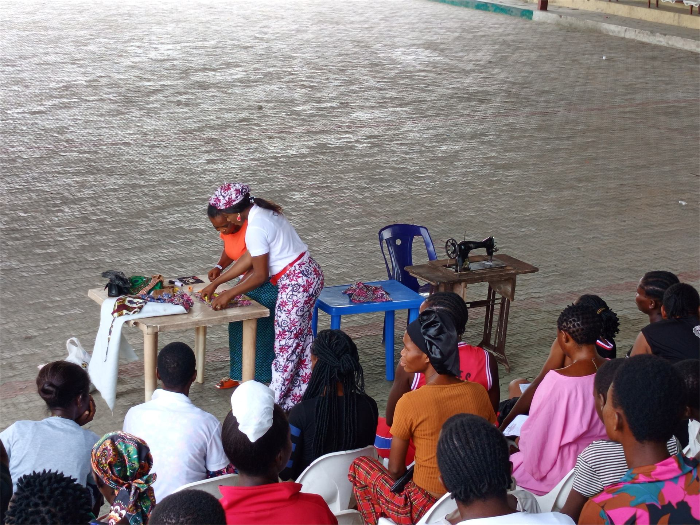

Learning Access
Scholarship support, school materials, and basic learning resources for students who need a reliable path forward.
We invest in young people through learning support, leadership formation, mentorship, and practical exposure that prepares them for service, enterprise, and future work.

Scholarship support, school materials, and basic learning resources for students who need a reliable path forward.
Clubs, workshops, and guided activities that build confidence, ethics, teamwork, and civic responsibility.
Mentorship, skills exposure, and practical guidance that helps young people connect education to real opportunity.
Youth Education and Leadership invests in young people as learners, innovators, and future community leaders. It supports education, character, mentorship, civic responsibility, and practical exposure to livelihood opportunities.
The program uses workshops, clubs, mentoring, school outreach, practical projects, and leadership activities. It helps young people connect education with real-life purpose and community contribution.


The program supports young people academically while preparing them to serve and lead.
Back to all programs